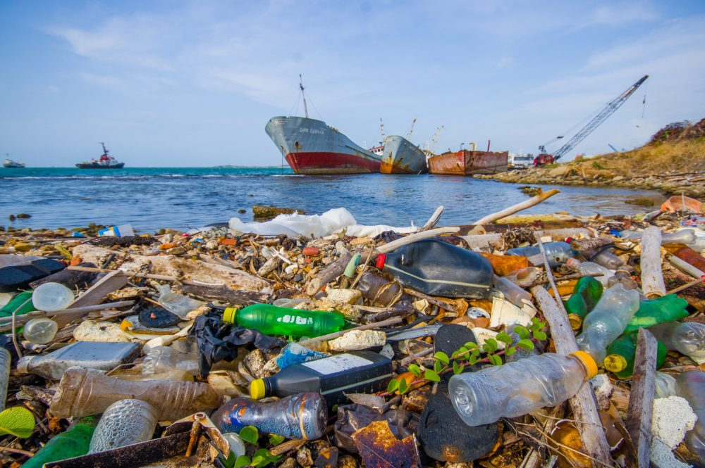

Um relatório publicado em 2021 pelo Programa das Nações Unidas para o Meio Ambiente (Pnuma) mostra que o plástico é a maior, mais prejudicial e mais persistente parte dos resíduos humanos que acabam no mar, representando 85% do total.
O material poluidor também foi detectado em todos os oceanos do planeta. O estudo Panorama dos oceanos, mares e recursos marinhos na América Latina e no Caribe, de fevereiro de 2022, produzido pela Comissão Econômica para a América Latina e o Caribe, relata que microplásticos (sobras do processo de decomposição dos plásticos) chegaram a oceanos profundos, fossas submarinas, no gelo do mar profundo e do mar Ártico e até a lugares 
“Sabemos que quase não existem mais ecossistemas livres de plástico. Os cientistas encontraram microplásticos no topo das montanhas mais altas, no sangue humano e em lugares super remotos, como as profundezas do Mar Antártico”, diz Cristian Lagger, ecologista marinho, pesquisador do Laboratório de Ecologia Marinha do Instituto de Diversidade e Ecologitão remotos como a região da Patagônia, entre a Argentina e o Chile.
Entre os impactos da poluição por plásticos nos ambientes marinhos estão efeitos letais e subletais em diversos animais, desde baleias, focas, tartarugas, aves e peixes, até invertebrados e corais. O relatório do Pnuma registra que os plásticos atingem os animais ao se emaranhar a eles, podendo causar lesões, afogamento, asfixia, privação de oxigênio, estresse fisiológico, dano toxicológico, entre outros estragos.
Fonte: National Geographic